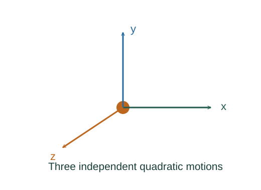

Derive ½kBT per quadratic degree of freedom
Classical thermal equilibrium assigns Boltzmann weights to energies. A Gaussian integral, or an integration-by-parts identity, then fixes the average energy in each independent quadratic momentum term.
What the symbols mean
pₓ: one momentum component; β = 1/(kBT); m: molecule mass. Statistical averages integrate all allowed momenta.
When this applies
Classical canonical equilibrium, separable quadratic momentum energy, unrestricted momentum range and a convergent distribution. Quantum freeze-out can invalidate classical equipartition.

State the statistical input
A classical equilibrium microstate of energy H has weight proportional to exp(−βH). For an independent x momentum with energy pₓ²/(2m), its marginal weight is Gaussian.
Go deeper at this stepWhy do equilibrium probabilities have Boltzmann weights?Derive Boltzmann weights from a thermal reservoirWrite the normalized mean
The mean kinetic term is the weighted integral divided by the integral of the weight. The unknown normalization cancels.
Integrate a total derivative
The function p exp[−βp²/(2m)] tends to zero at both infinite endpoints. Its derivative is exp[−βp²/(2m)] − (β/m)p²exp[−βp²/(2m)]. The integral of that derivative is therefore zero.
Divide to extract the mean
The ratio of the p² integral to the normalization integral is m/β. Multiplication by 1/(2m) gives 1/(2β) = kBT/2.
Add three translational directions
The classical translational energy is the sum of three independent quadratic terms. Their means add.
Go deeper at this stepPut this thermal result back into the pressure derivationDerive pV = nRT from molecular collisionsWhere each equation comes from
Derived equations link to an argument below. Definitions, physical postulates and constitutive models are identified as the inputs of that argument.
Derivation of the main resultDerived result
Conditions: Classical canonical equilibrium, separable quadratic momentum energy, unrestricted momentum range and a convergent distribution. Quantum freeze-out can invalidate classical equipartition.
- State the statistical input. A classical equilibrium microstate of energy H has weight proportional to exp(−βH). For an independent x momentum with energy pₓ²/(2m), its marginal weight is Gaussian. Explain the equation used in step 1 ↗ Why do equilibrium probabilities have Boltzmann weights? ↗
- Write the normalized mean. The mean kinetic term is the weighted integral divided by the integral of the weight. The unknown normalization cancels. Explain the equation used in step 2 ↗
- Integrate a total derivative. The function p exp[−βp²/(2m)] tends to zero at both infinite endpoints. Its derivative is exp[−βp²/(2m)] − (β/m)p²exp[−βp²/(2m)]. The integral of that derivative is therefore zero. Explain the equation used in step 3 ↗
- Divide to extract the mean. The ratio of the p² integral to the normalization integral is m/β. Multiplication by 1/(2m) gives 1/(2β) = kBT/2. Explain the equation used in step 4 ↗
- Add three translational directions. The classical translational energy is the sum of three independent quadratic terms. Their means add. Explain the equation used in step 5 ↗ Put this thermal result back into the pressure derivation ↗
Equation in step 1Derived result
What is being shown: State the statistical input
A classical equilibrium microstate of energy H has weight proportional to exp(−βH). For an independent x momentum with energy pₓ²/(2m), its marginal weight is Gaussian.
Starting conditions and inputs: Classical canonical equilibrium, separable quadratic momentum energy, unrestricted momentum range and a convergent distribution. Quantum freeze-out can invalidate classical equipartition.
Equation in step 2Derived result
What is being shown: Write the normalized mean
The mean kinetic term is the weighted integral divided by the integral of the weight. The unknown normalization cancels.
Earlier results used in this argument:
- w(pₓ) ∝ exp[−βpₓ²/(2m)] (Derived result)
Equation in step 3Derived result
What is being shown: Integrate a total derivative
The function p exp[−βp²/(2m)] tends to zero at both infinite endpoints. Its derivative is exp[−βp²/(2m)] − (β/m)p²exp[−βp²/(2m)]. The integral of that derivative is therefore zero.
Earlier results used in this argument:
- w(pₓ) ∝ exp[−βpₓ²/(2m)] (Derived result)
- ⟨pₓ²/(2m)⟩ = [∫ (pₓ²/(2m))e⁻ᵝᵖₓ²ᐟ⁽²ᵐ⁾ dpₓ]/[∫ e⁻ᵝᵖₓ²ᐟ⁽²ᵐ⁾ dpₓ] (Derived result)
Equation in step 4Derived result
What is being shown: Divide to extract the mean
The ratio of the p² integral to the normalization integral is m/β. Multiplication by 1/(2m) gives 1/(2β) = kBT/2.
Earlier results used in this argument:
- w(pₓ) ∝ exp[−βpₓ²/(2m)] (Derived result)
- ⟨pₓ²/(2m)⟩ = [∫ (pₓ²/(2m))e⁻ᵝᵖₓ²ᐟ⁽²ᵐ⁾ dpₓ]/[∫ e⁻ᵝᵖₓ²ᐟ⁽²ᵐ⁾ dpₓ] (Derived result)
- ∫ e⁻ᵝᵖ²ᐟ⁽²ᵐ⁾ dp = (β/m) ∫ p²e⁻ᵝᵖ²ᐟ⁽²ᵐ⁾ dp (Derived result)
Equation in step 5Derived result
What is being shown: Add three translational directions
The classical translational energy is the sum of three independent quadratic terms. Their means add.
Earlier results used in this argument:
- w(pₓ) ∝ exp[−βpₓ²/(2m)] (Derived result)
- ⟨pₓ²/(2m)⟩ = [∫ (pₓ²/(2m))e⁻ᵝᵖₓ²ᐟ⁽²ᵐ⁾ dpₓ]/[∫ e⁻ᵝᵖₓ²ᐟ⁽²ᵐ⁾ dpₓ] (Derived result)
- ∫ e⁻ᵝᵖ²ᐟ⁽²ᵐ⁾ dp = (β/m) ∫ p²e⁻ᵝᵖ²ᐟ⁽²ᵐ⁾ dp (Derived result)
- ⟨pₓ²⟩ = m/β ⇒ ⟨Kₓ⟩ = 1/(2β) = ½kBT (Derived result)
A worked example
For a classical monatomic ideal gas, U = 3NkBT/2 = 3nRT/2. Thus the molar constant-volume heat capacity is CV = 3R/2.
Derivation behind this calculation ↗A point to keep straight
The Boltzmann distribution is an explicit statistical-mechanics input here. Molecular rotational or vibrational modes need not be classically active at every temperature.
Check the assumptions and derivation ↗